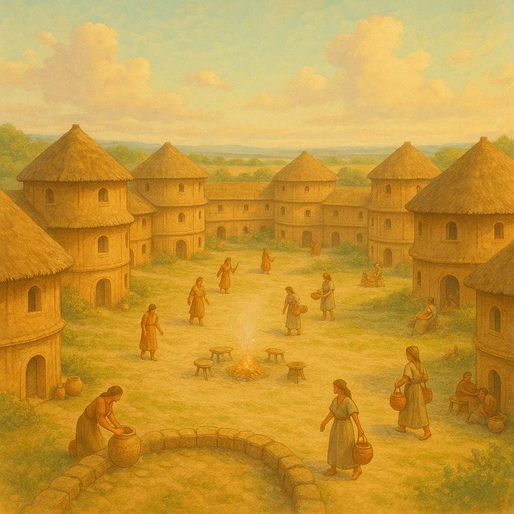
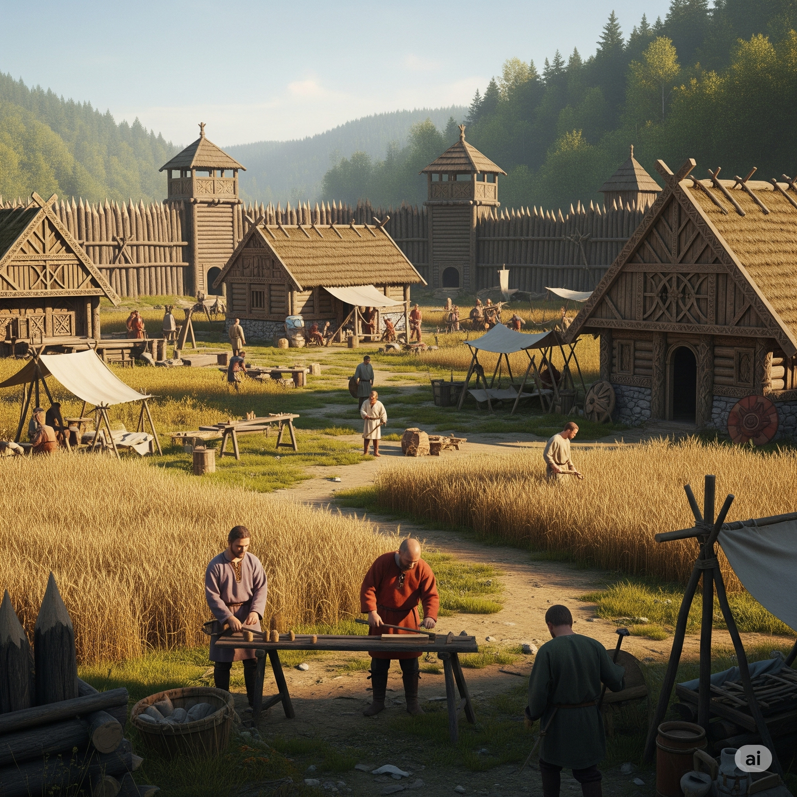
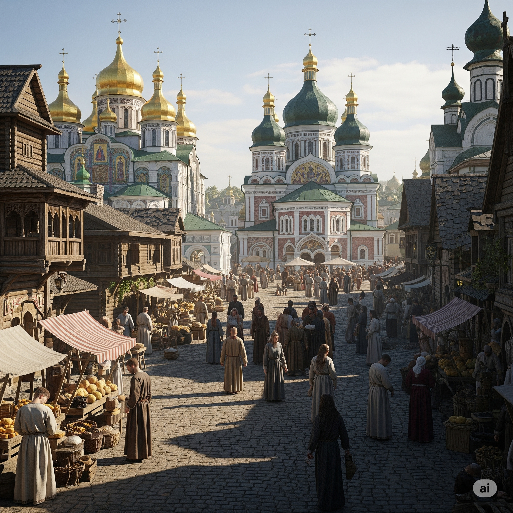
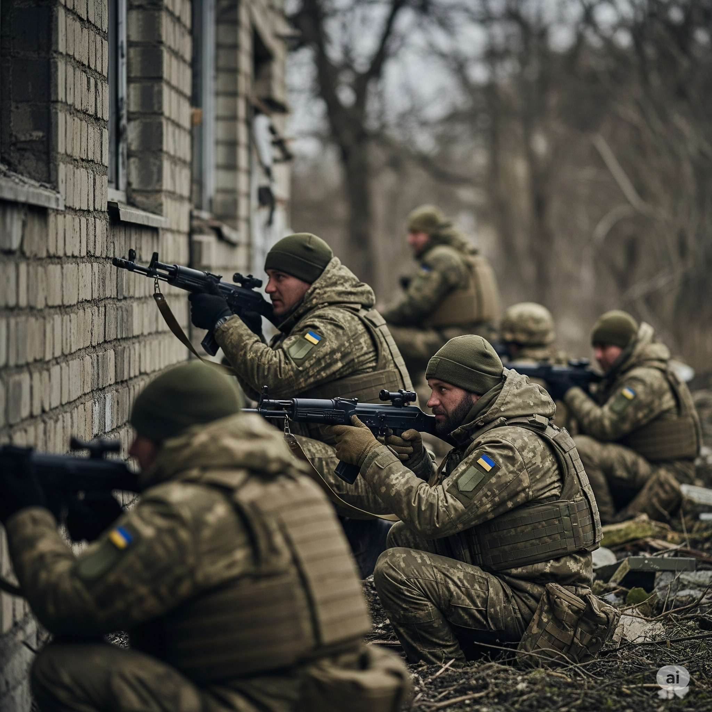

Про проєкт: Відродження Історії через Інновації
ВОЛЯ — це амбітний 3D Action-Adventure проєкт, що має на меті створити безпрецедентний рівень занурення в тисячолітню історію боротьби українського народу за свою свободу. Це не просто гра, це емоційна сага про нерозривний зв'язок поколінь, де гравець перевтілюється у ключових предків головного героя — сучасного українського воїна.
Ми прагнемо не просто розважити, а й запропонувати глибокий, освітній та емоційно насичений досвід, де кожен вибір має значення, а історія оживає завдяки передовим технологіям.
Ключові Особливості та Технологічні Виклики
-
Революційні ШІ-Діалоги:
Наша головна інновація — це інтеграція передової системи діалогів на основі штучного інтелекту. Це дозволить гравцям вести **глибокі та динамічні діалоги з ключовими персонажами**, використовуючи природну мову, що значно розширює можливості взаємодії. Технологічний виклик полягає у забезпеченні контекстуальної точності, низької затримки, керування особистістю NPC та масштабування для великого ігрового світу.
-
Механіка "Волі":
Ключова особливість, що відображає внутрішню силу та незламність духу героїв. "Воля" накопичується через ваші рішення, впливає на дипломатію та діалоги, і має прямий вплив на фінал гри. Ця механіка тісно переплітається з ШІ-діалогами, дозволяючи вам відчути реальні наслідки своїх слів та дій.
-
Епічний Масштаб Історії:
Проєкт охоплює **багато годин захопливого геймплею** крізь сім докорінно різних історичних епох України. Від первісних часів до сучасності, кожен період пропонує унікальні виклики та можливості, забезпечуючи глибоке вивчення історії та культури.
-
Еволюція Геймплею:
Кожна епоха представляє нові геймплейні механіки: від мирного будівництва та виживання, через складну бойову систему та стратегічне планування, до стелсу та глибокої дипломатії. Це створює постійну динаміку та тримає гравця у напрузі, адаптуючись до історичних реалій.
-
Моральні Вибори та Наслідки:
Гравцю доведеться робити важкі моральні вибори, які впливатимуть на розвиток сюжету, долю персонажів та, що найважливіше, на рівень "Волі" — ключової внутрішньої сили, яка веде до доленосного фіналу.
Наші Герої: Від Предків до Нащадків
Кожен герой — це пращур Олеся, втілення унікального аспекту "Волі" та носій автентичних геймплейних механік. Через їхні долі гравець переживе багатовікову історію незламного духу українського народу.
Епохи "ВОЛІ": Подорож Крізь Тисячоліття
Зануртесь у сім докорінно різних, але взаємопов'язаних епох української історії. Кожна доба — це цілісний ігровий світ зі своїми унікальними викликами, персонажами та можливостями.

Трипільське поселення: Зародження цивілізації, гармонія з природою та перші прояви єдності.

Скіфська Доба: Свобода безкрайніх степів, виживання та формування духу незалежності.

Давні Слов'яни: Племінне життя, пошук єдності та протистояння першим викликам, що формує волю до самовизначення. Тут ключова роль належить мудрості та дипломатії.

Київська Русь: Епоха державотворення, лицарства, захисту кордонів та запеклої боротьби за віру та ідентичність.

Козацька Доба: Час героїзму, боротьби за волю та зради, що визначила подальший шлях нації.

XX століття (Визвольна Боротьба): Період відчайдушного опору та незламної волі до свободи у найжорстокіших умовах.

Сучасність: Кульмінація боротьби, де дух усіх предків об'єднається для вирішального протистояння.
Кожна епоха є важливою главою у великій сазі "ВОЛІ", де минуле формує сьогодення, а дії кожного предка відгукуються у фінальному протистоянні.
Механіка "Волі" та Дипломатія
Ключовою особливістю гри є механіка "Волі" — це інтегрована частина геймплею, що відображає внутрішню силу, рішучість та незламність духу героїв, впливаючи на сюжет та взаємодії.
- **Вплив на Діалоги:** Накопичена "Воля" може розблоковувати унікальні діалогові опції, дозволяючи переконувати NPC, змінювати їхнє ставлення та впливати на хід подій.
- **Дипломатична Перевага:** "Воля" надає перевагу в переговорах, допомагає знаходити компроміси та мирні вирішення конфліктів, що є критично важливим для багатьох історичних сценаріїв.
- **Кульмінація Сюжету:** Рівень накопиченої "Волі" протягом усіх епох безпосередньо вплине на фінал гри, дозволяючи Олесю закликати духовних провідників та мудреців з минулого для вирішального протистояння.
Наша Команда: Створюючи Майбутнє Ігор
Ми — команда інноваторів та ентузіастів, об'єднаних спільною мрією: створити гру, яка не лише розважатиме, а й змінить уявлення про наративні ігри, розповівши світові про незламний дух та багатовікову історію України.
Наразі ми активно шукаємо талановитих фахівців, що готові прийняти виклик розробки гри з проривними ШІ-технологіями та глибоким змістом. Якщо ви маєте пристрасть до ігор, історії, інновацій та вірите у силу українського духу, ми запрошуємо вас приєднатися до створення чогось справді великого!